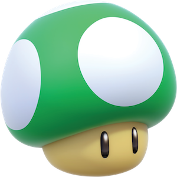

스스로를 달팽이 또는 초록 버섯이라 칭하는 권승연의 약력 쓰기 시행착오 기록장!
이 장소는 달팽이(또는 초록 버섯)의 시행착오가 모인 곳이다. '약력'을 쓰기 위해 생각한 순서대로 시행착오를 기록했다. 가장 마지막에 해당하는 시행착오5가 마감 기간까지의 최종 약력이다. 최종본만 읽고 싶다면 시행착오5로 가시오!
시행착오1 : 나의 약력과 초록 버섯
- 2000. 03. 19. ~ 고양시 거주
- 2003 ~ 2004 Austin 거주
- 2004. 08 귀국 후 고양시 거주
- 2007 초등학교 입학 후 '아이들이 선생님 말을 잘 듣고 규칙을 지켜서 유치원보다 훨씬 좋다'선언.
- 2019 ~ 연예인을 좋아하기 시작
- 2020 ~ 홍익대학교 디자인학부 재학
- 2021 홍익대학교 시각디자인과 학생회 ‘온돌’ 사무부
- 2021 홍익대학교 시각디자인과 졸업준비위원회 도우미
- 2021 제 31회 와우영상제 운영팀 회계팀
- 2022 ~ 한글꼴연구회
- 2022 홍익대학교 × 유니버설스튜디오 산학협력 학생연구원
- 2022 김이홍 아키텍츠
일을 시작한 시간 순서대로 나열하자면 이런 활동을 했다. 혹시나 무언가 빠진 게 있다면, 그리고 그것이 기억이 난다면, 언젠가 슥- 추가될 것이다. 다른 사람들과 다른, 나만의 약력에 무언가 추가하고 싶었다. 그 항목은 바로...
"2021. 12. 27 ~ 1-up kinoko"
권승연은 가장 많이 사용하는 sns, 카카오톡에서 2021년 12월 27일부터 초록 버섯(1-up kinoko)을 프로필 사진으로 사용하고 있다. 중학교 친구들 다섯 명이서 맞춘 프로필 사진이다. 누구는 대왕버섯, 누구는 땅콩버섯, 누구는 빨강버섯, 누구는 황금왕버섯. (모두 정식 명칭은 아니다. 내가 그렇게 부른다.) 우리끼리 웃긴 점은 땅콩버섯인 친구가 가장 키가 크고, 대왕버섯인 친구는 나보다 키가 조금 작다는 점이다. 단지 하늘색을 좋아해서 땅콩을 골랐고, 단지 귀엽다는 이유로 대왕버섯을 고른 것이다. 또 의문이 든다. 대체 귀여운 건 뭘까? 무언가(또는 누군가를, 어딘가를?) 좋아한다는 건 뭘까. 귀여운 걸 좋아하는 나는 뭘까. 쩝. 어려운 질문이다. 약력에서 이런 이야기를 생각하고 있는 나도 참 어렵다. 이 글은 후보글에 남겨둬야겠다. 약력 다시 써봐야지… 하하.
시행착오2 : 스스로에게 약력을 정의하기
정말 약력다운 약력을 써보고 싶다. 약력다운 건 뭘까? 나에겐 언제 어떤 일을 했는지 기록하는 것인 것 같다. 그렇다면 이 일의 범주는 어떻게 될까? 시행착오1에서 시도한 초록 버섯도 일에 들어가나? 보통의 경우엔 아닌데. 내가 상상하는 약력은 구홍의 PPT에 등장한 장운길 부회장의 것과 같다. 하지만 나는 스물셋밖에 안 되었고, 저만큼의 분량과 중요성을 낼 이야기는 없다. 그래서 약력이 어렵게 느껴지는 것이라 생각한다. 흠냐링. 다시 써야겠다.
시행착오3 : 세 번째 도전하는 약력
약력에 대한 순간의 생각
약력에 대한 구홍의 PPT를 다시 읽어 보았다. 권승연은 약력 몇 줄로 사람들에게 어떻게 인식되길 바라는가? 구홍의 말씀대로, 누군가는 약력만으로 나를 인식하고, 오해하고, 나아가 나를 과연 자신의 추억 속에 간직할 만한지 판단하기도 한다. 누군가 나를 판단해야 하는 상황이라면, 그리고 그 누군가가 정말 누가 될지 알 수 없다면, 나는 무엇을 소개하고 싶을까? 내가 이제껏 생활해온 궤적은 무엇일까? 또 고민을 나열하고 약력은 완성하지 못했다. 이런..! 다시.
시행착오4 : 이것은 어떤 달팽이이자 버섯을 자처하는 자의 약력이다.
이 웹사이트의 주인은 달팽이와 버섯이 함께 있는 장면을 좋아한다. 두 대상에 대해 잘 아는 것은 아니지만. (달팽이와 버섯의 종류도 잘 모른다. 그런 쪽으로 관심을 가지고 있지도 않다.) 둘의 조합은 어쩐지 여유로운 기분도 들고, 축축하고, 은근히 어두운 새벽이 상상된다. 단순히 그 이유로 달팽이와 버섯을 웹사이트의 이름으로 사용했다. 좋아해서! 2021년 12월 27일부터 버섯 프로필 사진을 설정한 것도 한 이유가 될 것으로 추정한다. 인스타그램의 작업 계정도 같은 이름을 사용한다. 두 대상은 한국어로 '달팽이'와'버섯', 영어로 'snail'and'mushroom'이다. 인스타그램의 아이디는 한글로 지을 수 없었기 때문에, 영어로 통일하고자 했다. snail and mushroom을 빠르게+잘못 읽으면 snailshroom, snail's room처럼 읽히는 것 같았다. 달팽이의 방이 되어버린 버섯이다. 달팽이와 버섯의 방에 방문한 당신을 환영한다.
- 권승연은 2000년생으로, 곧 스물넷이 된다.
- 권승연은 홍익대학교 디자인학부 시각디자인전공 20학번으로, 3학년에 재학중이다.
- 권승연은 3학년 여름방학 동안 김이홍 아키텍츠에서 인턴과 외주 사이의 일을 했다.
- 권승연은 2022년부터 한글꼴연구회의 회원으로 활동중이다.
- 권승연은 2022년 여름, 한글꼴연구회의 여름 전시 '글자놀이터'에 참여했다. 모국어가 아닌 언어를 배려하자는 마음을 담았다.
- 권승연은 2021년 한 해 동안 홍익대학교 시각디자인과 학생회 '온돌'의 사무부원으로 일했다.
- 권승연은 2021년 말, 제 31회 와우영상제의 운영팀, 회계팀으로 일했다.
- 권승연은 2021년 말, 홍익대학교 시각디자인과 졸업준비위원회의 도우미로 일했다.
시행착오5 : 권승연의 약력
- 권승연은 2000년 3월, 대한민국 경기도 고양시(이제는 고양특례시이지만.) 출생이다.
- 유치원 시절에는 화가를, 초등학생 시절에는 디자이너와 건축가, 항공기 정비사를, 중학생 시절부터는 시각디자이너를 꿈꾸었다.
- 어렸을 적부터 하늘을 좋아했고 구름을 올려다보길 좋아했다. 어느 정도냐면... 유치원, 초등학교 때의 친구를 성인이 되고 우연히 길에서 마주쳤는데, 구름 사진을 찍는 사람이라서 권승연이라고 확신했다고 한다. 가끔은 위를 보고 걷다가 넘어질 뻔하기도 한다.
- 16살부터 홍익대학교 시각디자인과에 진학하고 싶어 학생부를 설계했다. 다행히 성공했다. 현재 홍익대학교 디자인학부 시각디자인전공 20학번으로, 3학년에 재학중이다.
- 소리를 기록하는 문자의 모양을 공부하길 좋아한다. 문자 체계, 문법 또한 좋아한다. 안타깝게도 문법만을 좋아하고, 문학에는 관심이 없다. 학문을 심하게 편식한다.
- 글자의 모양에 대한 관심으로 2022년, 홍익대학교 시각디자인과의 한글꼴연구회에 입단하여 활동한다.
- 2022년 여름, 한글꼴연구회의 '글자놀이터'전시에 참여했다. 곧 열릴 전시에 다시 참여한다.
- 책을 디자인하는 일로 돈벌이를 시작했다.
- tmi :
2017년부터 고양이를 좋아하기 시작했다. 고양이를 상당히 좋아하지만 알러지가 있어, 밀폐된 공간에 함께 있는 상황에 기뻐하면서 괴로워한다.
snail and mushroom
시행착오를 기록함으로써 약력에 대해 하고 싶은 이야기를 다 써버린 것일지도...시행착오의 기재로 약력이란 것을 쓰기 위한 고민이 드러나길 바랍니다...
